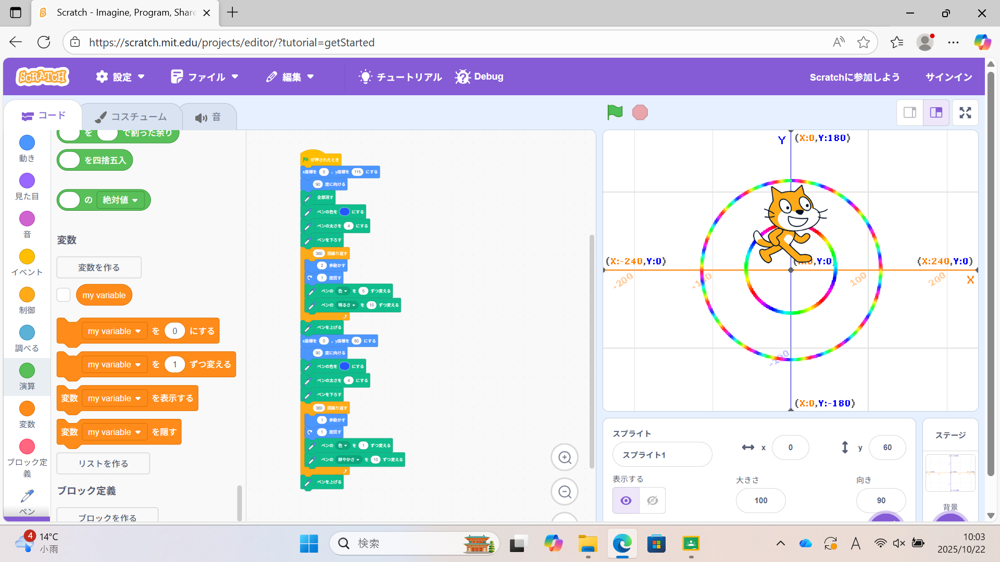
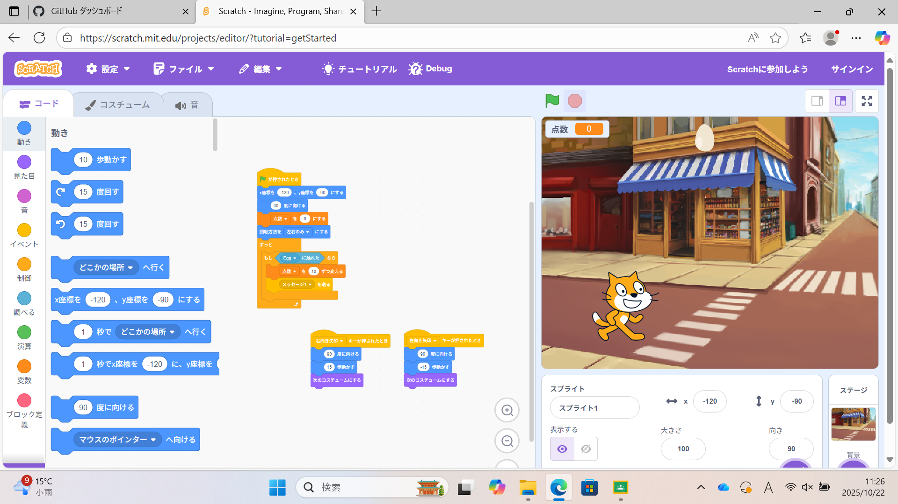

1週目のレポート ： 公大高専１年実習I-1
3b班30番 Re-S-Rapid
第1週目
1-1 サイエンスアート

1.内容
サイエンスアートでは、Scratchを使って猫をプログラムして動かすことで線を描いた。
画像の外側の円は色を５、明るさを１０ずつ、内側の円は色を１、鮮やかさを１０ずつ変えながら線を描くプログラムにした。
2.感想
私は、中学校のコンピュータ部の活動でScratchを使っていくつかゲームを製作したことがあったが、
拡張機能でこのようなことができるとは知らなかったので、Scratchでもまだまだできることが沢山あると感じた。
1-2 ゲーム

1.内容
学習した内容を説明する文章を
りんごキャッチゲームでは、私はりんごを卵に変えて制作した。卵は、乱数を用いて、X座標が-200から200までの位置から、
1から4秒間でランダムに落ちてくるプログラムになっている。猫は、右向き矢印が押されたときに15歩、左向き矢印が押されたときに
-15歩動かすことで左右に動き、卵に触れると点数を追加して卵を隠すプログラムになっている。
2.感想
卵が落ちてくる位置や落ちきるまでの時間を乱数で設定することでランダムにすることができるというのは、私には思いつかなかった
ことで、感心した。また、完全にランダムになっているようには思えないのでよりランダムにすることはできないのか気になった。
1-3 ホームページ作成
私のホームページ
1.内容
I1テーマのレポートは、Githubを用いてホームページとして作成する。webページのCodeから編集するものを選び、鉛筆マークを押すことで、
編集することができる。編集後はCommit Changesを押して保存する。
2.感想
私は、これまでにHTMLを使ってみたいと思ったことは何度かあったが、覚えることが多かったりして難しいと思い、結局やったことなかった。
しかし、今回初めて本格的にホームページを作ってみて、やはりおもしろそうだと感じた。
各ページへのリンク
1週目のレポート
2週目のレポート
3週目のレポート
私のホームページ